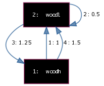

GeoGraphy: introduction
What is
GeoGraphy is a formal system for the organization of sound material. It deals only with sequencing.
Nevertheless, some infos on how to connect to audio component is provided
Its approach to time structure makes it suitable for use both on a micro (granular synthesis) and on a macro temporal scale (what is usually referred as sequencing). Its core component is a graph-based sequencer.
How it works: Graphs
Basic structures of GeoGraphy are graphs. A graph represents a series of possible sequencing relations (edges) between sound objects (vertices). More, a graph contains temporal information: each edge is weighted with the time interval separating the attack of the starting vertex from the attack of the target vertex. A "graph actant" is a dynamic element moving on the graphs and generating a path, i.e. a time-stamped sequence of sound objects.

A graph
In the previous figure the graph represents possible sequencing relations between two vertices (with ID: 1, 2) labelled "woodh" and "woodl". Intuitively the (arbitrary) labels can refers to two e.g. two audio samples of high and low woodblocks. Each edge is given an ID (1 to 4) and a label representing the time (in beats) separating the attacks of two consecutive vertices.
The graph is directed: this means that each edge represents a sequence from a start vertex to an end vertex (hence the arrows in the figure).
The graph is also a multigraph: more edges can connect the same two adjacent vertices (it is the case of edge 1 and 4). In the actual implementation all the edges from a vertex have the same possibilities to be choses (i.e. uniform distribution).
The graph allows looping: the end edge can be the same start edge (see edge 2 on vertex 2).
Graphs are distributed in a (actually) 2D space, each vertex being given a position (x, y).
Suppose that a graph actant is inserted on vertex 1 (woodh). Then a sequence like these can result:
woodh --> woodl --> woodl --> woodh --> woodl etc.
1 0.5 1.25 1.5 etc
The percussion frame, pt. I: if you think to graphs in terms of percussion sets, graph actants can be thought as percussionists: in this sense, a graph describes a grammar for percussion playing
There can be as many graph actants as necessary: each of them represents a parallel sequencing process on the graph. Each of them is given a weight (in normalized range 0-1.0). The weight in itself is an abstract property, it can be seen as a way to control relative strenght of each actant (e.g. typically in audio mapping: volume between resulting different tracks).